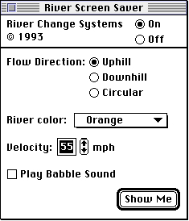

Defining the User Interface for a Control Panel
The user interface for a control panel consists of the display area defined by the dialog box and its controls, including checkboxes, buttons, static text, editable text, and user items. In addition, you need to provide an icon for your control panel file, for display by the Finder. A control panel can open in a modeless dialog box of any size, limited only by the screen display.Your control panel's display area can consist of one or more rectangles; you determine the display area by defining the rectangles and their positions. You specify these values in your control panel's rectangle positions (
'nrct') resource. These rectangles essentially determine the size of the dialog box. The Finder calculates the boundaries of the dialog box from the coordinate values you specify in your rectangle positions resource.When deciding on the size and number of your rectangles, consider the number and placement of the buttons, checkboxes, text, and other items in your control panel. Allow enough space for the user to distinguish them easily. Because control panels are generally used only occasionally, make the interface as simple as possible. If you choose the default settings well, the user should seldom need to use your control panel.
Figure 8-6 shows the user interface for the River control panel used as an example throughout this chapter. It governs certain features of River, a screen saver system extension.
Figure 8-6 The River control panel interface

In System 7, you can include a font information resource that specifies the font in which the Finder displays your control panel's static text items. (For information on creating a font information resource, see "Specifying the Font of Text in a Control Panel" on page 8-23.) Choose a font that is easy to read. In System 7, the control panel interface allows ample space for larger point sizes; Apple recommends 12-point Chicago.If you don't include a font information resource, the Finder uses the default application font for static text items. For Roman scripts, this is 9-point Geneva. (The static text of the River control panel illustrated in Figure 8-6 is 12-point Chicago because this control panel provides a font information resource for this purpose.) Note that the Finder uses the system font to draw text strings that you define as part of a control item in your item list; for Roman scripts, this is 12-point Chicago.
If your control panel runs in both System 7 and System 6 but you wish to display your control panel's static text in 12-point Chicago, you can define the text as user items. See "Defining Text in a Control Panel as User Items" on page 8-24 for details.
If you wish, you can create an icon family to specify the icon that the Finder uses to represent your control panel file. The icon family resources are
'ICN#','ics#','icl8','icl4','ics8', and'ics4'.The icons for a control panel file are square and include a horizontal or vertical slider along with a graphic representing the feature governed by the control panel. Figure 8-7 shows an icon for the River control panel file.
Figure 8-7 An icon for the River control panel file
See Macintosh Human Interface Guidelines for more information on designing an icon. For complete information on designing a dialog box, see the chapter "Dialog Manager" in Inside Macintosh: Macintosh Toolbox Essentials.